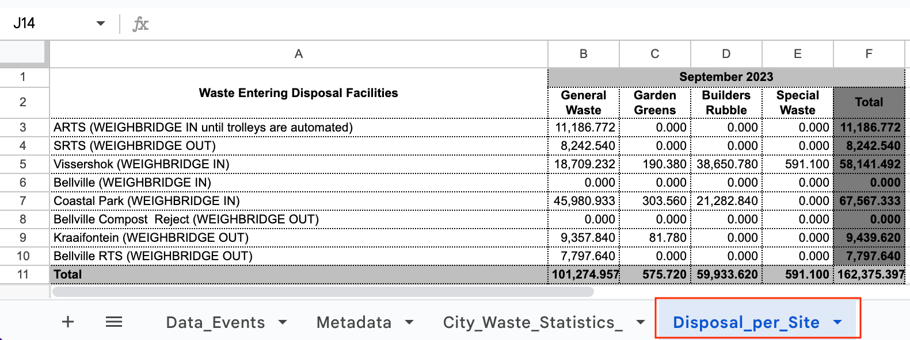
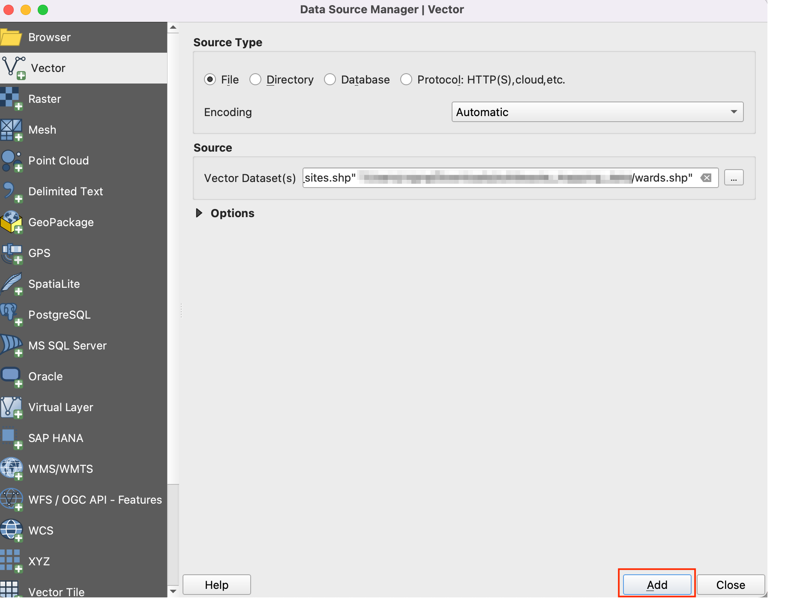

Ujaval Gandhi
Ujaval GandhiMapping Waste Disposal Volumes (QGIS3)¶
This tutorial is designed to help you discover new mapping techniques and cartographic tools available in QGIS.
Overview of the task¶
You will learn how to take point data of landfills and create a proportional-symbol map showing amount of waste processed at each landfill.

Other skills you will learn¶
Importing ArcGIS server data in QGIS using REST URL.
Importing tabular data from spreadsheets in QGIS.
Get the data¶
You can find the data for the tutorial from Cape Town Open Data Portal - https://odp-cctegis.opendata.arcgis.com. We will be importing data from the portal using ArcGIS Online REST service and will be preparing three layers mentioned below.
Wards: A polygon shapefile with ward boundaries of Cape Town.
Landfill Sites: A point shapefile with current, closed and proposed waste processing facilities in Cape Town.
Waste Disposal Data: A spreadsheet with amount of waste entering City disposal facilities.
Let’s see the step wise to prepare the dataset for this tutorial.
Go to the Data Portal - https://odp-cctegis.opendata.arcgis.com/search?tags=. We will search for the
Wardsdata in the search bar and click to browse further.
Click on View Full Details to explore services available to get the data.

Scroll down to find View Data Source open and click on the it.

On the ArcGIS REST Services Directory, go to Home and copy the URL of that page. The copied looks like - https://citymaps.capetown.gov.za/agsext1/rest/services.

Now, open QGIS and go to .

The list of data sources is seen in the left panel. Scroll down to find . Click on new to create new server connection.

In the Connection Details, give the Name
Cape Town Open Data Portaland paste the copied url as an input for URL.
Click OK and then Connect to see the data folders available in the server.

Now we will search for all three layers required for the tutorial from the database. Firstly, we will open
Wardslayer in the QGIS. Expand folders to browse to the layers. Full path to the layer is - . Select the layer and click Add.
Let’s open
Landfill sitesin QGIS. Full path to the layer is . Select the layer and click Add.
Now we will search for the
Waste Disposalspreadsheet on the data portal. Click on theWaste Disposaldata link to download the file.
The file named
Waste Disposal September 2023.odswill be downloaded after clicking on the link. Open the file. The file contains 3 sheets out of which we will be usingDisposal_per_Sitedata for the tutorial.We will keep only the total disposal per site. Add a new sheet named
Disposal_per_Site_editedand copy the data fromDisposal_per_Sitesheet. Edit the site names by removing the brackets to match the attributes ofLandfill sitesdata. The values are formatted numbers, change it to simple decimals. Save it aswaste_disposal_september2023.odsin a data folder for this tutorial.
Observe that there are 3 different sites for
Bellvilleand disposal value is zero for two of them. Let’s combine it to keep the onlyBellvillesite with thenon-zerovalue.
Switch to QGIS. We have already imported the shapefiles from ArcGIS server. Let’s save it in the local data folder for this tutorial. Right-click on the
Landfill Sites And Refuse Transfer Stationslayer. Go to .
In the Save Vector Layer as dialog, navigate to the data folder and save the shapefile as
landfill_sites.shp. Click OK.
Similarly, save the
wardlayer aswards.shpin the data folder. Now we have prepared the data folder with all three layer and ready to start with the procedure.
For convenience, you may directly download a copy of these files below:
Procedure¶
Open QGIS. Click icon to add the layer.

Switch to Vector tab and navigate to the data folder and select
wards.shpandlandfill_sites.shpfiles. Click Add.Open the Attribute Table of the
landfill_siteslayer. This layer contains all solid waste collection sites in Cape Town. You can see that theSTATUSattribute contains whether the facilities are operational or not. We can use the values in this column to select only the Current facilities.
Right-click the
landfill_siteslayer and select Filter.
5. In the Query Builder, enter the following expression and click OK.
"STATUS" = 'Current'

Once the filter is applied, only a subset of point will be visible on the map. Next we will add the
waste_disposal_september2023.odsfile. Click on the icon and switch to Vector tab. Navigate the file by clicking on … button given beside File name. Click Add.
In the Select Items to Add dialog, select
Disposal_per_Site_editeditem and click Add Layers.
Open the attribute table of
waste_disposal_september2023layer. This table has the name of the facility and total waste collected at the site for the month of September 2023.
Let’s join this table with the
landfill_sitespoints layer. Go to from the menubar.
Search and locate the Join attributes by Field Value tool from the toolbox. Double-click to open it.

11. In the Join Attributes by Field Value dialog, select landfill_sites as the Input layer and NAME as the Table field. Select waste_disposal_september2023 as the Input layer 2 and Disposal Site as the Table field 2.
Check the Discard records which could not be joined box. Save the Joined layer by clicking on … button and select Save to File.

Name the output layer as
waste_by_station_september_2023.shpand click Run.

Once the processing finishes, a new layer
waste_by_station_september_2023will be added which will have the amount of waste in theSept2023column.

Now let’s visualize this data. First select the
Wardslayer and click on icon.

Set the symbology of this layer to Single Symbol with a light Fill color and Stroke color.

Next select the
waste_by_station_september_2023layer and select Simple Marker symbol. Click the drop-down for Symbol layer type.

Select
Filled Markeras the Symbol layer type. We will now change the size of the symbol proportional to the amount of waste collected at the site. To do this, we must apply a Data-defined Override - which can apply a field value or expression to calculate the size for each feature. Click the Data-defined Override button next to Size and select Assistant.

We want to size the filled symbols based on values of collected waste. Select
Sept2023field as Source. Set values from5000to50000. Now set the size of circle from1to25. Click on the Back icon.

You will see the circles of different size for each point. The sizes are in Millimeters unit. The data-defined override button will turn yellow indicating that an override is applied for that value.

Let’s explore more advanced styling options. Change the Symbol layer type to Shapeburst Fill. Select 2 colors of your choice to render the circles with a gradient fill.

21.Next we will apply a Drop-shadow effect to the circles to make them pop-out on the map. These are known as Live Layer Effects. Scroll down and expand the Layer Rendering section. Check the Draw effects button and click the star button.

Enable the Drop Shadow option.

The map looks pretty good now, but the reader needs to know what values these symbols represent. It will be good to have an interpretable legend. Click Back button till you are back in the main Layer Styling dialog. Select Marker and click on the Advanced button at the bottom. Select Data-defined Size Legend.

Enter
Waste Collected (Tonnes)as the Title and click the + button to add legend entries. Since our symbols are scaled by a factor of 3, enter the appropriate value and Label. You will see a nice legend now appear in the Layers panel. The same legend will be available in thePrint Layoutif you wished to create a map from this data.

Close the Layer styling panel. The visualization is ready. You learnt how to turn a data in a table to a visually informative and attractive map.

If you want to give feedback or share your experience with this tutorial, please comment below. (requires GitHub account)